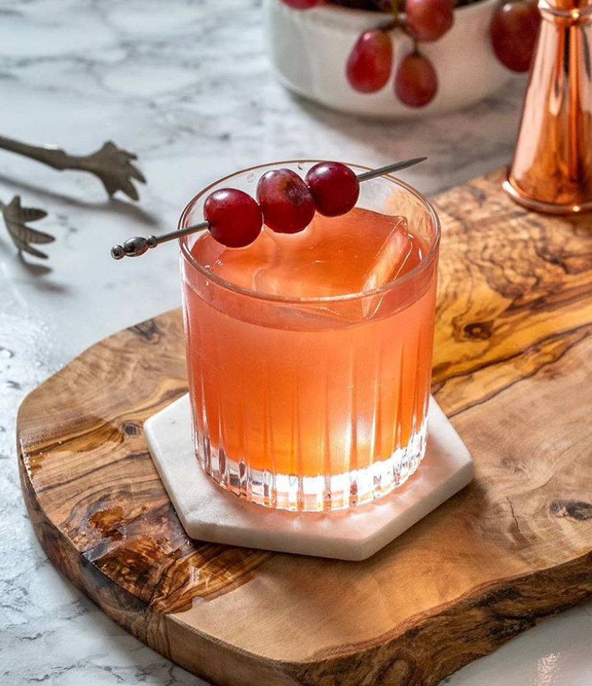

Enzoni Cocktail

How to create an Enzoni cocktail.
It's a riff on a Negroni, but with gin and grapes.
It's a highly refreshing summer drink!
Ingredients
- 1 oz Gin
- 1 oz Campari
- 0.75 oz lemon juice
- .5 oz simple syrup, rich
- 5 green grapes
Directions
- Muddle the grapes in your shaker
- Add the remaining ingredients
- Shake with ice (one large cube, one broken)
- Strain over fresh ice into a double old fashioned glass
- Garnish with skewered grapes